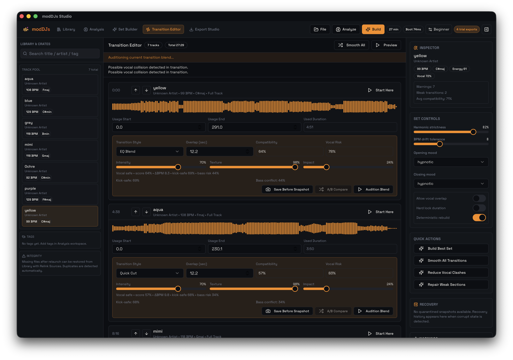

Refinement
Where sequence becomes arrangement.
The Transition Editor is for shaping relationships between placements, not for pretending to be a live booth. This is where overlap windows, transition style, Start Here, and snapshot discipline matter.
 Transition Editor
Transition EditorRefinement
The Transition Editor is for shaping relationships between placements, not for pretending to be a live booth. This is where overlap windows, transition style, Start Here, and snapshot discipline matter.
| Style | Best for | Expected character |
|---|---|---|
| Phrase Blend | Smooth, phrase-safe handoffs | Balanced and structured |
| Filter Blend | Club transitions with tonal motion | Airy and forward-moving |
| Echo Out | Clear exits into a new intro | Space-creating and decisive |
| Sidechain Duck | Dense kick-based handoffs | Cleaner low-end handover |
| Ghost Intro | Introducing a future source early | Tease, preview, anticipation |
| Section Slice | Club-edit style weaving | More arranged, less linear |

Segment Pool is the app's answer to more creative club arrangement. A source track can contribute multiple phrase-safe slices at different points in the set if their local BPM, key, texture, and transition context make sense.